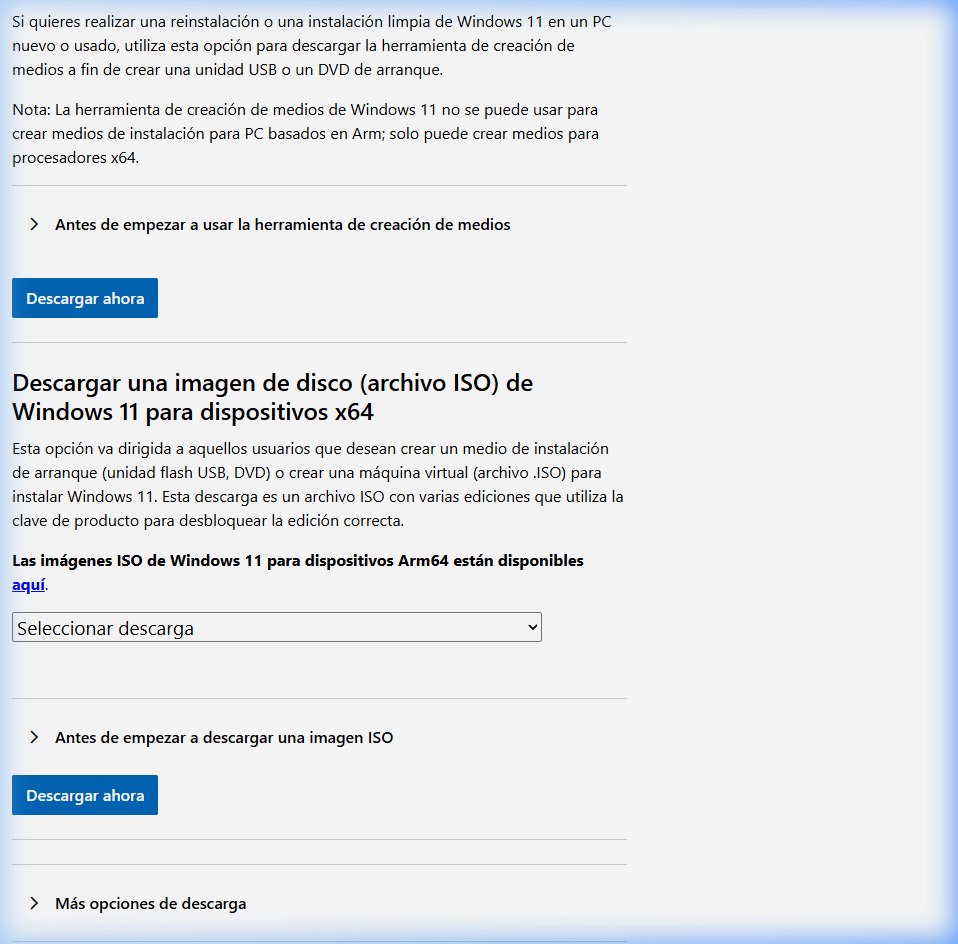
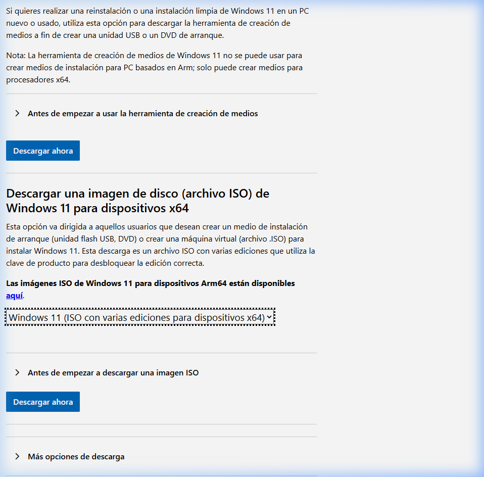
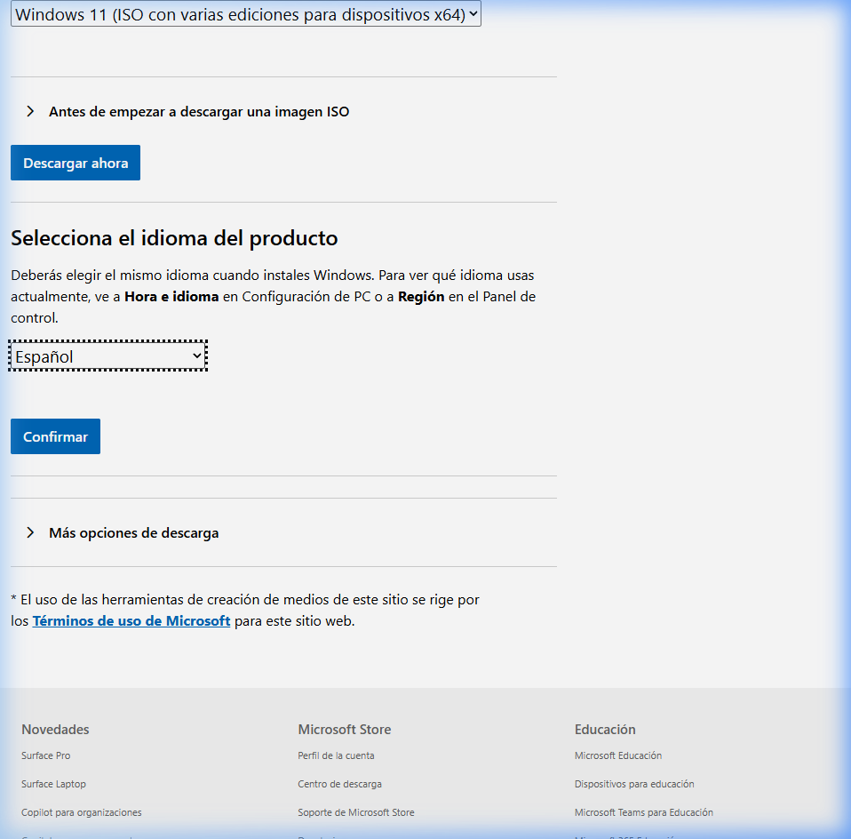
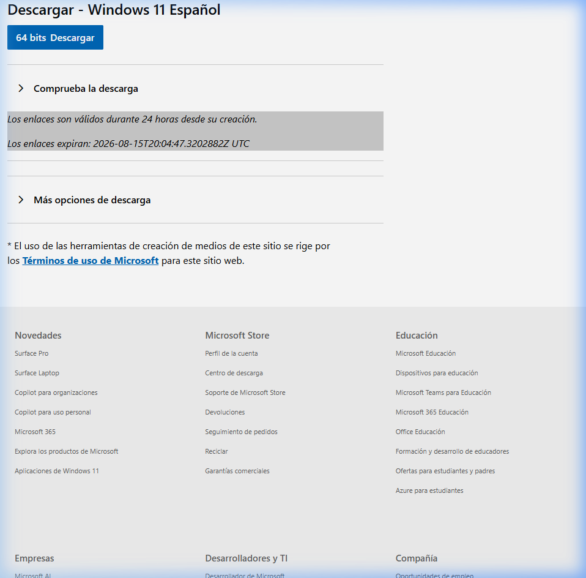
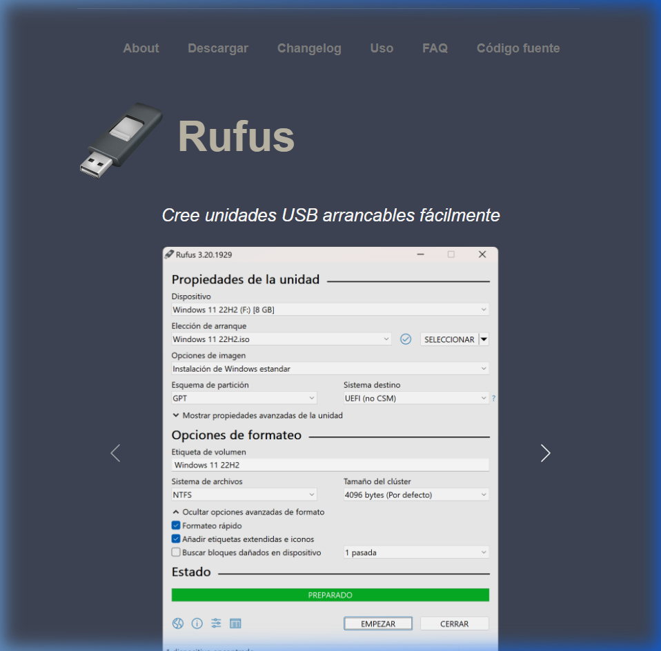
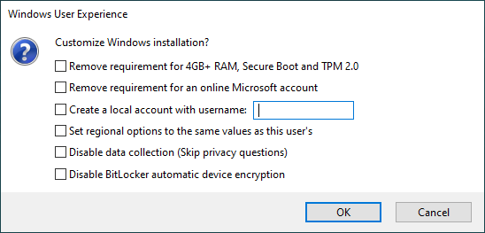

Cómo Instalar Windows 11 en un Portátil sin Sistema Operativo
Guía ilustrada y explicada paso a paso para Romero. Aprenderás a descargar la imagen oficial de Microsoft, preparar tu pendrive de instalación y dejar tu nuevo ordenador listo para funcionar de la forma más sencilla.
Muchos fabricantes venden portátiles más baratos sin Windows instalado para ahorrar el coste de la licencia. Al encenderlo por primera vez, verás una pantalla negra con letras blancas o un menú simple. No te preocupes: el hardware es exactamente el mismo y siguiendo esta guía lo dejarás con Windows 11 oficial y funcionando a la perfección.
Requisitos Previos y Material Necesario
Asegúrate de tener todo listo antes de comenzar el proceso.
-
1. Memoria USB (Pendrive) de 8 GB o superior ¡Atención! Durante el proceso se borrará todo lo que haya dentro de la memoria USB. Guarda tus fotos o documentos previamente.
-
2. Otro ordenador con conexión a Internet Lo necesitarás durante 10 minutos para descargar la imagen de Windows y grabarla en el USB (puede ser el ordenador de un amigo o familiar).
-
3. El nuevo portátil conectado a su cargador de corriente No instales el sistema únicamente con la batería; si se apaga en mitad de la instalación podría dar errores.
-
4. Clave de producto de Windows 11 (Opcional) Si no tienes clave todavía, no pasa nada: puedes instalarlo sin clave pulsando «No tengo clave de producto» y activarlo más adelante.
Herramientas y Descargas Oficiales
Las 2 únicas herramientas que necesitas para todo el proceso.
Imagen ISO original que contiene Windows 11 Home y Pro. Directamente desde los servidores de Microsoft.
Ir a Descarga Microsoft ↗La herramienta más rápida y sencilla para pasar la ISO al pendrive USB y dejarlo listo para arrancar en el portátil.
Descargar Rufus ↗Paso 1: Descargar la ISO de Windows 11 (Capturas Reales)
Sigue exactamente estos 4 sencillos clics en la web de Microsoft.
¡Sí! El archivo descargado es la ISO Multi-edition de 64 bits. Durante la instalación en el portátil, Windows te mostrará una lista donde elegirás Windows 11 Home.
Acceder a la página y bajar hasta «Descargar imagen de disco (ISO)»
Entra en el enlace oficial de Microsoft: microsoft.com/.../windows11. Acepta el aviso de cookies si te aparece y baja por la página hasta encontrar la tercera sección llamada «Descargar imagen de disco de Windows 11 (ISO) para dispositivos x64».

Seleccionar la versión y hacer clic en «Descargar ahora»
Abre el menú desplegable y marca la opción «Windows 11 (multi-edition ISO para dispositivos x64)». A continuación, pulsa el botón azul «Descargar ahora».

Elegir el idioma del producto y pulsar «Confirmar»
Aparecerá un nuevo recuadro debajo titulado «Seleccionar el idioma del producto». Haz clic en el desplegable «Elegir un idioma», selecciona «Español» (o tu variante preferida) y haz clic en el botón azul «Confirmar».

Descargar el archivo ISO de 64 bits
Se generará tu enlace de descarga seguro. Pulsa sobre el botón azul «64-bit Descargar». Se descargará un archivo con extensión .iso de aproximadamente 5 a 6 GB (ejemplo: Win11_23H2_Spanish_x64v2.iso). Guárdalo en tu carpeta de Descargas.

Paso 2: Crear el USB de Instalación con Rufus
Convierte tu pendrive en un disco de arranque para el nuevo portátil.
Conecta el pendrive USB en el ordenador donde has descargado la ISO y abre la aplicación Rufus (no requiere instalación, haz doble clic en el archivo rufus.exe descargado de rufus.ie).
Configurar la ventana principal de Rufus
Ajusta las opciones tal y como se muestra en la captura oficial de Rufus:
- 🔹 Dispositivo: Asegúrate de que aparece tu pendrive USB (mínimo 8 GB).
- 🔹 Elección de arranque: Haz clic en el botón «SELECCIONAR» y elige el archivo
.isode Windows 11 descargado. - 🔹 Esquema de partición: Selecciona GPT.
- 🔹 Sistema de destino: Selecciona UEFI (no CSM).
- 🔹 Sistema de archivos: Deja NTFS (o el asignado automáticamente).
- 🔹 Haz clic en el botón inferior «EMPEZAR».

Opciones de Experiencia de Usuario de Windows (Ventana Emergente)
Al pulsar «EMPEZAR», Rufus te mostrará una ventana con opciones especiales muy útiles:

- Eliminar el requisito de 4GB+ RAM, Secure Boot y TPM 2.0: Garantiza máxima compatibilidad.
- Eliminar el requisito de una cuenta Microsoft en línea: Te permitirá crear un usuario normal local sin obligarte a poner correo durante la instalación.
Paso 3: Encender el Portátil y Arrancar desde el USB
Cómo acceder al Menú de Arranque (Boot Menu) según la marca de tu portátil.
1. Asegúrate de que el portátil nuevo esté completamente apagado y conectado a su cargador.
2. Conecta el pendrive USB en cualquier puerto USB del portátil.
3. Pulsa el botón de Encendido y, de forma inmediata y repetida, pulsa la tecla de Menú de Arranque (Boot Menu) que corresponda a la marca de tu equipo:
| Marca del Portátil | Tecla Boot Menu (Recomendada) | Tecla Entrar a BIOS | Notas |
|---|---|---|---|
| ASUS | ESC o F8 | F2 o SUPR | Pulsar ESC repetidas veces nada más encender. |
| HP (Hewlett-Packard) | F9 | F10 o ESC | Pulsar ESC para menú de inicio rápido y luego F9. |
| Lenovo (IdeaPad, Legion, ThinkPad) | F12 | F2 o Fn + F2 | Algunos modelos tienen el botón físico «Novo Button» en un lateral. |
| Acer | F12 | F2 | Si F12 no responde, entra en BIOS (F2) y activa «F12 Boot Menu: Enabled». |
| Dell | F12 | F2 | Pulsa F12 al ver el logotipo de Dell hasta ver «Preparing one-time boot». |
| MSI | F11 | SUPR / DEL | Pulsar F11 repetidamente al encender. |
| Gigabyte / AORUS | F12 | SUPR / DEL | Pulsar F12. |
| Huawei / Honor | F12 | F2 | Mantener pulsado F12 al encender. |
En el menú que aparecerá en pantalla, usa las flechas del teclado para seleccionar tu memoria USB (ej. «UEFI: SanDisk...» o «UEFI: Kingston...») y presiona ENTER. En pocos segundos verás el logotipo de Windows cargando el instalador.
Paso 4: Proceso de Instalación de Windows 11
Guía pantalla a pantalla dentro del asistente oficial de instalación.
En un portátil nuevo sin SO, es habitual ver una o dos particiones pequeñas llamadas FreeDOS, DriverCD o Unidad 0 Espacio sin asignar.
- Si quieres una instalación 100% limpia: Selecciona cada partición de la Unidad 0 y haz clic en el botón «Eliminar» (icono de papelera) hasta que solo te quede un único elemento llamado: «Unidad 0 Espacio sin asignar».
- Haz clic sobre ese «Espacio sin asignar» y pulsa directamente en «Siguiente». El instalador creará automáticamente todas las particiones del sistema necesarias.
⚡ REGLA DE ORO: En cuanto la pantalla del portátil se apague para reiniciarse, desconecta y retira el pendrive USB del portátil. Si lo dejas conectado, algunos ordenadores vuelven a cargar el instalador desde el principio en lugar de continuar con Windows.
Paso 5: Configuración Inicial de Windows (OOBE)
Personalización de usuario, idioma y conexión a Internet.
El equipo se iniciará con la pantalla de bienvenida con música y fondo azul de Windows 11. Sigue estos sencillos pasos:
- 1️⃣ País o región: Elige tu país (ej. España) y pulsa «Sí».
- 2️⃣ Distribución del teclado: Selecciona «Español» y haz clic en «Omitir» cuando te pregunte si deseas añadir una segunda distribución.
- 3️⃣ Conexión a Red Wi-Fi: Selecciona tu red doméstica e introduce la contraseña del router.
- 4️⃣ Cuenta de Usuario: Inicia sesión con tu cuenta de Microsoft (correo de Hotmail / Outlook / Gmail) o crea una cuenta nueva. Configura tu PIN de acceso rápido (4 o 6 números).
- 5️⃣ Privacidad: Desactiva las opciones de diagnóstico o publicidad si lo prefieres y haz clic en «Aceptar».
En la pantalla de conexión a red Wi-Fi, pulsa en tu teclado las teclas Shift + F10 (en algunos portátiles Shift + Fn + F10). Se abrirá una ventana de comandos negra. Escribe exactamente el siguiente comando y pulsa Enter:
oobe\bypassnro
Paso 6: Puesta a Punto, Drivers y Activación
Deja tu nuevo portátil con el máximo rendimiento y todos sus dispositivos funcionando.
Ve a Inicio > Configuración (rueda de engranaje) > Windows Update y pulsa el botón «Buscar actualizaciones». Windows descargará e instalará automáticamente los controladores de tarjeta gráfica, sonido, touchpad y Wi-Fi de tu fabricante. Reinicia el equipo cuando te lo solicite.
Entra en Microsoft Store y descarga la app de gestión de batería y rendimiento oficial de tu portátil: • ASUS: MyASUS | Lenovo: Lenovo Vantage | HP: HP Support Assistant | Dell: Dell SupportAssist
Ve a Configuración > Sistema > Activación > Cambiar la clave de producto e introduce tu licencia original de Windows 11 Home para disfrutar de todas las funciones de personalización.
Preguntas Frecuentes y Solución de Problemas
Soluciones a los fallos más comunes al instalar en equipos nuevos.